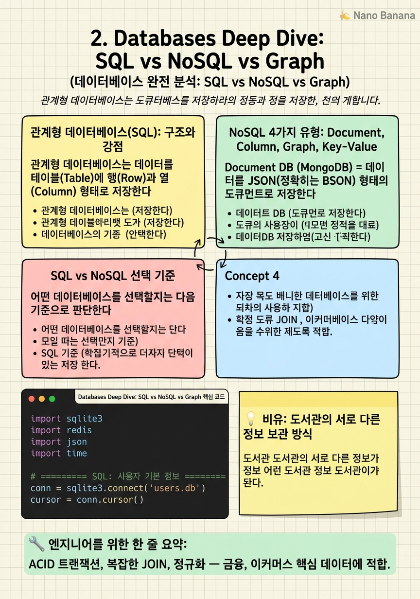

Databases Deep Dive: SQL vs NoSQL vs Graph

🎯 학습 목표
- SQL과 NoSQL의 근본적 차이를 설명할 수 있다
- NoSQL 4가지 유형(Document, Column, Graph, Key-Value)의 특성을 안다
- 주어진 비즈니스 요구사항에 맞는 데이터베이스를 선택할 수 있다
- JOIN, 트랜잭션, 정규화의 개념을 이해한다
- Redis를 캐시로 사용하는 패턴을 안다
데이터베이스 선택은 시스템 디자인에서 가장 중요한 결정 중 하나다. 잘못된 선택은 나중에 마이그레이션이라는 지옥을 불러온다. 관계형 데이터베이스(SQL)가 수십 년간 지배했지만, 인터넷 규모의 데이터와 다양한 데이터 형태가 등장하면서 NoSQL이 부상했다. 오늘날 대형 시스템은 대부분 여러 종류의 데이터베이스를 용도에 맞게 혼합해서 사용한다.
관계형 데이터베이스(RDBMS) = 테이블과 행으로 구조화된 데이터를 저장하고, SQL 쿼리로 조회하며, ACID 트랜잭션을 지원하는 데이터베이스. PostgreSQL, MySQL, Oracle이 대표적이다.
NoSQL = 'Not Only SQL'. 관계형 모델의 엄격한 스키마와 JOIN 제약을 벗어나, 유연한 데이터 모델과 수평 확장에 최적화된 데이터베이스들의 총칭이다. Document, Column, Graph, Key-Value의 4가지 주요 유형이 있다.
중요한 것은 'NoSQL이 SQL보다 좋다'가 아니다. 각자의 강점과 약점이 있으며, 데이터의 구조, 접근 패턴, 일관성 요구사항에 따라 최적의 선택이 달라진다.
핵심 내용
관계형 데이터베이스(SQL): 구조와 강점
관계형 데이터베이스는 데이터를 테이블(Table)에 행(Row)과 열(Column) 형태로 저장한다. 각 테이블은 스키마(Schema)로 정의되며, 어떤 컬럼이 존재하고 어떤 타입의 데이터가 들어가는지 미리 정해져 있다.
ACID 트랜잭션 = SQL의 가장 강력한 특성. Atomicity(원자성), Consistency(일관성), Isolation(격리성), Durability(지속성)를 보장한다. 은행 이체 시나리오를 생각해보자 — A 계좌에서 100만원을 빼고 B 계좌에 100만원을 더하는 두 연산은 반드시 함께 성공하거나 함께 실패해야 한다. ACID가 이를 보장한다.
JOIN = 여러 테이블의 데이터를 연결하는 SQL의 강력한 기능. customers 테이블과 orders 테이블을 customer_id로 JOIN하면, 어떤 고객이 어떤 주문을 했는지 단일 쿼리로 조회할 수 있다.
정규화(Normalization) = 데이터 중복을 최소화하고 무결성을 유지하기 위해 테이블을 여러 개로 분리하는 기법. 주소 정보를 고객 테이블에도, 주문 테이블에도 넣지 않고, 별도의 주소 테이블을 만들어 참조하는 방식이다.
SQL이 빛을 발하는 상황: 전자상거래(고객-주문-상품의 복잡한 관계), 금융 시스템(ACID 트랜잭션 필수), 명확하게 정의된 스키마가 있는 구조화된 데이터.
NoSQL 4가지 유형: Document, Column, Graph, Key-Value
Document DB (MongoDB) = 데이터를 JSON(정확히는 BSON) 형태의 도큐먼트로 저장한다. 스키마가 유연해서 각 도큐먼트가 서로 다른 필드를 가질 수 있다. SQL에서 고객-주문-상품이 3개 테이블로 분리되어 있다면, MongoDB에서는 이를 하나의 도큐먼트에 중첩해서 저장할 수 있다. JOIN 없이 단일 쿼리로 모든 데이터를 가져올 수 있어 빠르다. 콘텐츠 관리 시스템, 사용자 프로필, 제품 카탈로그에 적합하다.
Column DB (Cassandra, HBase) = 데이터를 행이 아닌 열 단위로 저장한다. 특정 열에 대한 집계 쿼리(SUM, AVG)가 매우 빠르다. 시계열 데이터(IoT 센서 데이터, 로그), 분석 워크로드에 최적화되어 있다. Cassandra는 수평 확장이 매우 뛰어나 대규모 쓰기 트래픽을 감당한다.
Graph DB (Neo4j) = 노드(Node)와 엣지(Edge)로 데이터를 표현한다. 소셜 네트워크에서 '친구의 친구' 관계, 추천 시스템에서 '이 상품을 산 사람들이 함께 산 상품', 사기 탐지에서 '이 사용자와 연결된 계정들' 같은 복잡한 관계 쿼리를 SQL보다 훨씬 효율적으로 처리한다.
Key-Value (Redis, Memcached) = 데이터를 키(Key)와 값(Value) 쌍으로 저장한다. 가장 단순하고, 가장 빠르다. 주로 RAM에 저장되어 마이크로초 단위의 응답 시간을 보여준다. 세션 저장, 캐시, 실시간 순위표에 사용된다. Redis는 단순한 Key-Value를 넘어 리스트, 셋, 정렬된 셋 등 다양한 자료구조를 지원해 범용성이 높다.
SQL vs NoSQL 선택 기준
어떤 데이터베이스를 선택할지는 다음 기준으로 판단한다.
| 기준 | SQL 선택 | NoSQL 선택 |
|---|---|---|
| 데이터 구조 | 정형화, 명확한 스키마 | 반정형, 유동적 스키마 |
| 관계 | 복잡한 다대다 관계 | 관계보다 데이터 접근 패턴 중심 |
| 일관성 | ACID 트랜잭션 필수 | 최종 일관성(Eventual Consistency) 허용 |
| 규모 | 중간 규모, 수직 확장 | 대규모, 수평 확장 필수 |
| 레이턴시 | 밀리초 허용 | 마이크로초 요구 (Key-Value) |
금융 앱: PostgreSQL (ACID 필수)
이커머스: PostgreSQL (주문/결제) + MongoDB (상품 카탈로그) + Redis (세션, 장바구니)
소셜 네트워크: PostgreSQL (사용자 기본 정보) + Neo4j (관계 그래프) + Cassandra (피드 데이터) + Redis (캐시)
추천 엔진: Cassandra (대규모 사용자 행동 로그) + Redis (실시간 추천 결과 캐시)
실무에서는 단일 데이터베이스로 모든 것을 해결하려는 유혹을 피해야 한다. 각 데이터 유형에 맞는 최적의 스토리지를 선택하는 것이 폴리글랏 퍼시스턴스(Polyglot Persistence) 패턴이다.
💡 비유로 이해하기
관계형 데이터베이스는 도서관의 정교한 카탈로그 시스템과 같다. 모든 책은 정해진 분류 체계(스키마)에 따라 분류되고, '이 작가의 이 장르 책 중 2020년 이후 출판된 것'을 찾는 복잡한 검색도 효율적으로 처리한다. 단, 새로운 분류 체계를 추가하려면 전체 카탈로그를 재정비해야 하는 불편함이 있다.
MongoDB(Document DB)는 작가가 직접 쓴 '책 설명서'를 파일 박스에 넣어둔 것과 같다. 어떤 책은 설명서가 5페이지, 어떤 책은 50페이지다. 형식이 자유롭고(유연한 스키마), 해당 책의 모든 정보가 한 파일에 있어 빠르게 찾을 수 있다(JOIN 없음).
Redis(Key-Value)는 자주 찾는 책들을 사서가 카운터 옆 서랍에 정리해 둔 것과 같다. '오늘의 베스트셀러'는 서랍에서 바로 꺼낼 수 있다(RAM 속도). 하지만 서랍이 꽉 차면 오래된 것은 치워야 하고(메모리 한계), 정전되면 서랍 내용이 사라질 수 있다(휘발성).
💻 코드 예시
같은 데이터를 SQL(SQLite)과 NoSQL(Redis)에 저장하고 조회하는 방식을 비교해 보자. 사용자 세션 데이터는 Redis가 훨씬 적합하다는 것을 코드로 확인한다.
import sqlite3
import redis
import json
import time
# ========== SQL: 사용자 기본 정보 ==========
conn = sqlite3.connect('users.db')
cursor = conn.cursor()
cursor.execute('''
CREATE TABLE IF NOT EXISTS users (
id INTEGER PRIMARY KEY,
name TEXT NOT NULL,
email TEXT UNIQUE NOT NULL,
created_at TIMESTAMP DEFAULT CURRENT_TIMESTAMP
)
''')
# ACID 트랜잭션 보장
try:
cursor.execute('INSERT INTO users (name, email) VALUES (?, ?)',
('Alice', 'alice@example.com'))
conn.commit() # 트랜잭션 커밋
except sqlite3.IntegrityError:
conn.rollback() # 실패 시 전체 롤백 — ACID!
# JOIN: 사용자와 주문을 연결
result = cursor.execute('''
SELECT u.name, o.total
FROM users u JOIN orders o ON u.id = o.user_id
WHERE u.id = 1
''').fetchall()
# ========== Redis: 세션 & 캐시 ==========
r = redis.Redis(host='localhost', port=6379)
# 세션 저장 (TTL 30분)
session_data = {'user_id': 1, 'role': 'admin', 'cart': [101, 205]}
r.setex(
name='session:abc123', # 키
time=1800, # TTL: 30분 후 자동 삭제
value=json.dumps(session_data)
)
# 마이크로초 단위로 읽기
start = time.time()
session = json.loads(r.get('session:abc123'))
print(f"Redis 조회: {(time.time()-start)*1000:.3f}ms")SQL 블록에서 conn.commit()과 conn.rollback()이 ACID의 원자성을 구현한다. UNIQUE 제약으로 이메일 중복을 방지하는 것이 데이터 무결성이다. Redis 블록에서 setex의 time=1800은 30분 후 세션이 자동 만료되도록 한다 — 수동으로 삭제할 필요 없이 Redis가 TTL을 관리한다. 세션처럼 빠른 조회와 자동 만료가 필요한 데이터는 SQL보다 Redis가 훨씬 적합하다.
🏭 현업에서의 평가
✅ 시니어가 보는 것
- 단일 DB로 모든 것을 해결하려 하지 않고, 용도에 맞는 DB를 조합하는가
- CAP 정리(Consistency, Availability, Partition Tolerance)를 이해하고 있는가
- 읽기/쓰기 비율, 데이터 크기, 접근 패턴을 먼저 파악하는가
- 데이터베이스 레플리케이션과 샤딩의 차이를 아는가
⚠️ 레드 플래그
- '항상 PostgreSQL을 씁니다' 또는 '항상 MongoDB를 씁니다' — 트레이드오프 없는 단정
- CAP 정리 모름 (NoSQL은 Consistency와 Availability 중 하나를 포기)
- 레플리케이션과 샤딩의 차이를 모름
- 인덱스의 역할과 성능 영향을 설명 못 함
🎤 예상 인터뷰 질문
- 트위터 피드를 저장할 데이터베이스를 선택한다면? 왜 그 DB를 선택했나요?
- 1억 명의 사용자가 있을 때 단일 DB에서 샤딩으로 전환하는 시점은 언제인가요?
- 결제 시스템에서 NoSQL을 사용할 수 있을까요? 어떤 조건에서 가능한가요?
✨ 핵심 요약
SQL의 핵심 강점
ACID 트랜잭션, 복잡한 JOIN, 정규화 — 금융, 이커머스 핵심 데이터에 적합.
Document DB (MongoDB)
유연한 스키마, 중첩 데이터, JOIN 없이 단일 도큐먼트로 조회 — 콘텐츠, 프로필에 적합.
Column DB (Cassandra)
대규모 시계열 데이터, 수평 확장, 높은 쓰기 처리량 — 로그, IoT, 피드에 적합.
Graph DB (Neo4j)
복잡한 관계 쿼리(친구의 친구, 추천) — SQL의 재귀 JOIN보다 수십 배 빠름.
Key-Value (Redis)
RAM 기반, 마이크로초 응답, TTL 자동 만료 — 세션, 캐시, 실시간 랭킹에 필수.
폴리글랏 퍼시스턴스
실무에서는 단일 DB로 모든 것을 해결하지 않는다. 용도에 맞는 DB를 조합한다.
선택의 핵심 질문
데이터 구조가 정형인가? ACID가 필요한가? 얼마나 빠른 조회가 필요한가? 수평 확장이 필요한가?